What this section covers: Why the Direct Reading Compass and DGI each fail alone, and what the gyro-magnetic compass solves.
Direct Reading Magnetic Compass (DRMC) Limitations
Turning and acceleration errors — cannot be read accurately during a turn.
Magnetic sensing element is within the instrument, close to the pilot — hence close to deviation sources (lights, motors, ferrous metal in the cockpit).
Self-contained — cannot feed heading information to other equipment.
Directional Gyro Indicator (DGI) Limitations
No magnetic element — if the gyro drifts, there is no correction except by the pilot manually synchronizing to the DRMC at regular intervals.
Turning and acceleration errors are eliminated, and output can be taken to other equipment — but long-term heading accuracy suffers from drift.
2. Requirement for the Gyro-magnetic Compass
What this section covers: The combined system concept; alternative names.
The ideal system combines the short-term rigidity of the gyro (overcoming turning and acceleration errors) with the long-term magnetic monitoring of the earth's field (correcting gyro drift via a servo/slaving system). This is the gyro-magnetic compass.
Alternative Names (all mean the same thing):
Gyro-magnetic Compass
Remote Indicating Compass (RIMC)
Slaved Gyro Compass
3. Basic System Description and Components
What this section covers: The five major components of the gyro-magnetic compass system.
Component
Alternative Name
Function
Magnetic Detector Unit
Flux valve / Flux detector
Senses direction of earth's magnetic field
Heading Indicator
Compass (HI)
Displays heading to pilot; driven by direct drive shaft from gyro
Precession Amplifier
Slaving amplifier
Amplifies, phase-detects, and rectifies the AC error signal to DC
Precession Motor
Slaving/synchronizing motor
Driven by DC error signal to turn the gyro
Horizontal Gyro
—
Provides short-term stability; directly connected to compass card via direct drive shaft and bevel gear
flowchart LR
FV["Flux Valve\n(Detector Unit)"] --"AC Error Signal"--> AMP["Precession Amplifier\n(Amplify, Phase-detect,\nRectify to DC)"]
AMP --"DC Signal"--> PM["Precession Motor"]
PM --"Corrects"--> GY["Horizontal Gyro"]
GY --"Direct Drive\nShaft (bevel gear)"--> HI["Heading Indicator\n(Compass Card)"]
HI --"Rotor-Stator\nComparison"--> FV
HI --"Heading Output\n(Selsyn)"--> OTH["Other Instruments\n(ADI, RMI, FMS...)"]
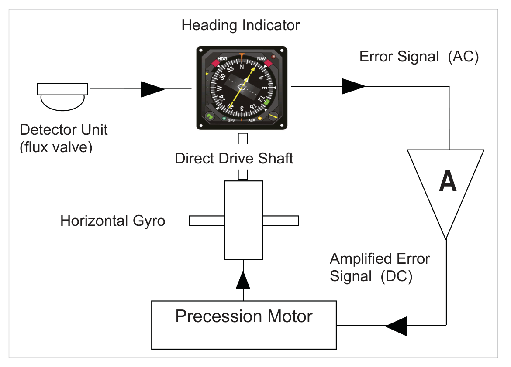
Fig 17.1 — Simple signal routing in the gyro-magnetic compass system. Source p.213
4. Operation with Steady Heading — Gyro Drift Correction
What this section covers: Step-by-step correction cycle when the gyro drifts while the heading is steady.
The flux valve senses the earth's magnetic field and reproduces it within the compass unit, where it is compared with the position of the gyro drive shaft.
If the two are aligned → no error signal → compass reads correctly. No action needed.
If the gyro drifts → drive shaft misaligns with flux valve field → an AC error signal is generated and passed to the precession amplifier.
The amplifier amplifies, phase-detects, and rectifies the AC error signal to DC.
The DC signal drives the precession motor, which turns the gyro.
The gyro output is fed via the direct drive shaft to the heading indicator for comparison with the flux valve signal.
When aligned → compass synchronized → no further action.
Key Parameter: Normal correction rate of the precession motor = approximately 3° per minute. This slow rate prevents the system from over-reacting to transient disturbances (turns, accelerations).
5. Operation in a Turn — Gyro Drift Small Over Period of Turn
What this section covers: Why the compass remains synchronized during turns without generating spurious error signals.
During a turn, the aircraft turns but the gyro (having rigidity) does not. The relative rotation between the horizontal gyro and the instrument case operates the bevel gear on the direct drive shaft, changing the heading indication on the compass card. At the same time, the heading sensed by the flux valve is also changing at the same rate. Therefore, no error signal is generated and the compass remains synchronized during the turn.
If there is some gyro drift during the turn, on completion of the turn a small error signal will appear and be corrected at the normal rate of ≈3°/min.
Why the gyro is not bypassed entirely: Without the gyro, the flux valve field could be compared directly with the compass card. However, such a system would be overly responsive to flux valve fluctuations and would suffer significantly from turning and acceleration errors. The gyro provides stability — corrections are applied only at ≈3°/minute.
6. Rapid Synchronization
What this section covers: The problem of initial random gyro alignment; two methods of rapid synchronization.
On initial switch-on, the gyro adopts a random alignment unlikely to be synchronized with the earth's magnetic field. At the normal rate of ≈3°/minute, a 90° misalignment would take 30 minutes to correct — unacceptable.
Rapid Synchronization Methods:
Mechanical clutch — operated by the pilot (similar to the DGI caging device).
High gain mode for the precession amplifier — a 2-position switch, spring-loaded to normal, held against the spring for rapid alignment. Increases precession motor correction rate so synchronization takes only a few seconds.
7. Detector Unit — The Flux Valve
What this section covers: Physical location, construction, and mounting of the flux valve.
The detector unit is positioned in a part of the aircraft least affected by on-board electrical fields — usually the wing tip or tail fin, where aircraft-generated magnetic disturbances are at a minimum.
Its function is to sense the direction of the earth's magnetic field. It contains a pendulous magnetic detecting element mounted on a Hooke's Joint which enables the detector to swing within limits of 25° about the pitch and roll axes, but allows no rotation in azimuth. The unit is contained in a sealed case partially filled with oil to dampen oscillations.
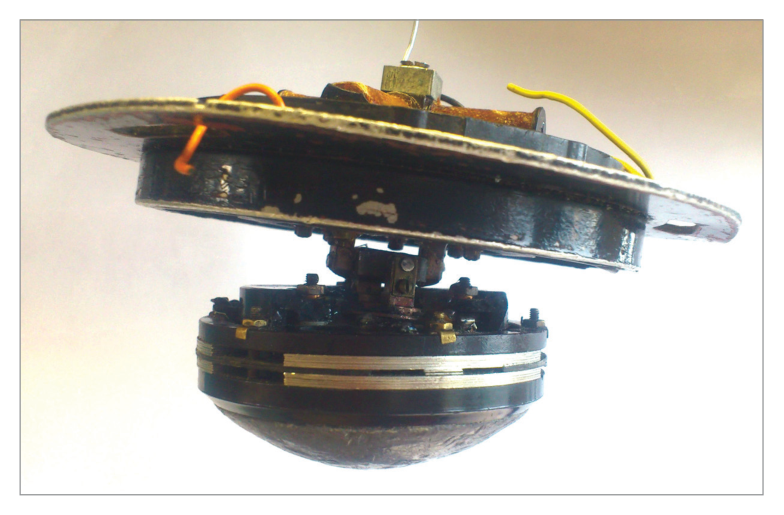
Fig 17.2 — A magnetic detector unit mounted in the wing tip. Source p.215
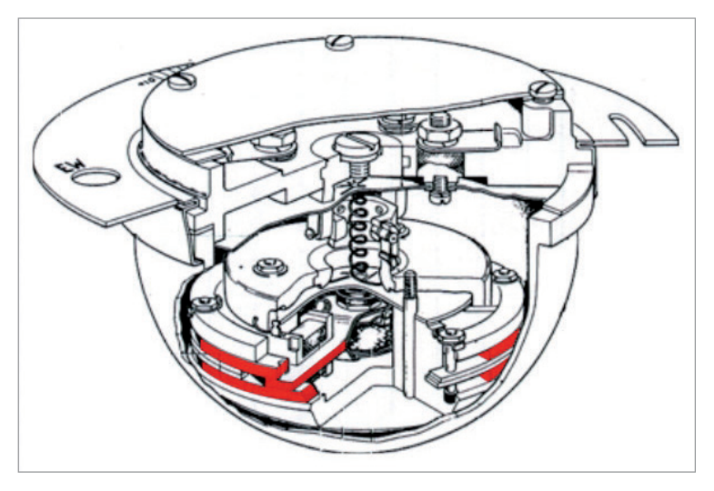
Fig 17.3 — Flux valve components: 3-spoked device, fixed in azimuth, with 'rams horns' at leg ends. Source p.215
The primary component is the flux valve — a 3-spoked device, fixed in azimuth but with some freedom in the vertical to align with the plane of the earth's magnetic field. The curved 'rams horns' at the end of each leg improve magnetic flux gathering efficiency.
8. Flux Valve — How It Works (Faraday's Law)
What this section covers: The electromagnetic principle of the flux valve; why 3 legs are needed; output characteristics.
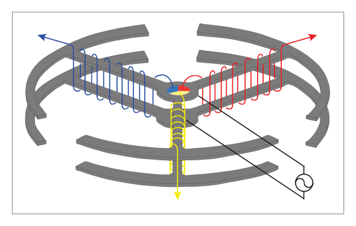
Fig 17.4 — Three flux valve legs assembled, showing secondary windings (red). Source p.216
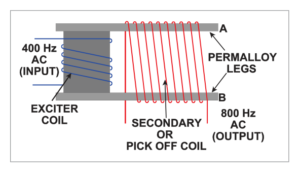
Fig 17.5 — A single leg of a flux valve: AC fed to centre post; produces anti-phase fields in top and bottom legs A and B. Source p.216
Single Leg Operation
AC is fed to the coil wound around the centre post, producing fields of opposite sign (anti-phase) in the top and bottom legs of the flux valve leg. Without the earth's background field, these two fields cancel → resultant flux = zero → no current in the pick-off coil.
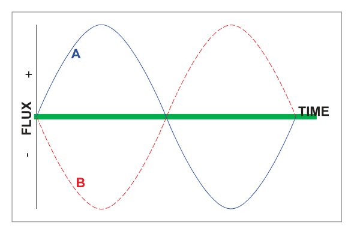
Fig 17.6 — Flux fields at A (red) and B (blue) in anti-phase: resultant (green) = zero. Source p.217
When the earth's magnetic field is present as a background, the positive and negative flux start from a non-zero baseline. The physical characteristics of the flux valve metal are such that it magnetically saturates at a certain level — it will not magnetize further beyond the saturation level.
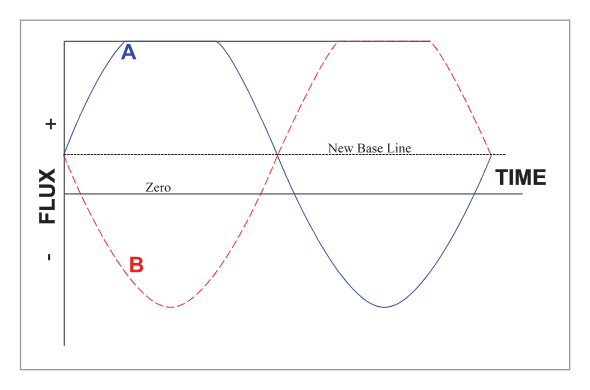
Fig 17.7 — Effect of earth's background magnetism: saturation causes the summed (green) flux to show a dip, which induces an EMF. Source p.217
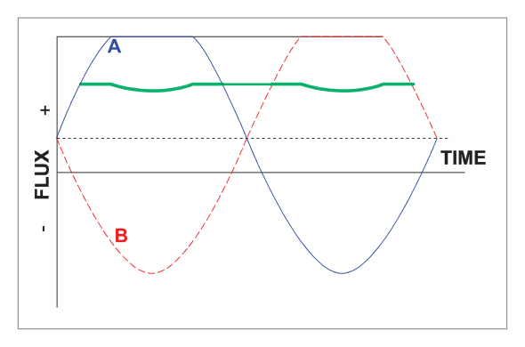
Fig 17.8 — Flux density: saturation limiting gives a resultant flux with dips from which EMF is induced. Source p.217
Faraday's Law of Electromagnetic Induction: "If the number of lines of force threading a circuit is changing, an induced electromotive force (EMF) will be set up in the circuit, the magnitude of the EMF being proportional to the rate of change in the number of lines of force threading the circuit."
The secondary winding picks up the change in magnetic flux density (the dips in the resultant flux) as an EMF, detected as an AC signal.
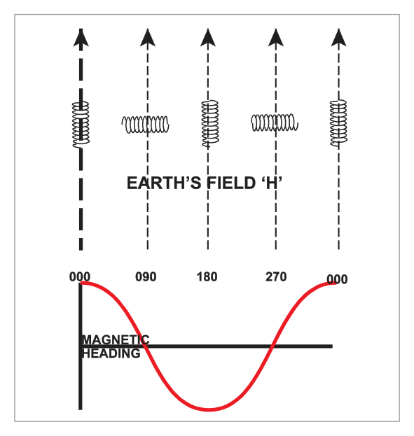
Fig 17.9 — EMF induced varies as the cosine of the magnetic direction of the flux valve leg. Maximum when leg is aligned with the earth's field; zero when at right angles. Source p.218
Why 3 Legs Are Needed
The EMF varies as the cosine of the angle between the flux valve leg and the earth's field — but for any given voltage, there are two possible heading values (cos is not a unique function from 0–360°). A single leg cannot unambiguously determine heading.
The 3-leg system solves this: the output from each leg is fed to one of 3 legs of a stator, recreating the earth's field relative to the flux valve direction around the direct drive shaft from the gyro to the heading indicator compass card. The 3-phase output uniquely determines the field direction.
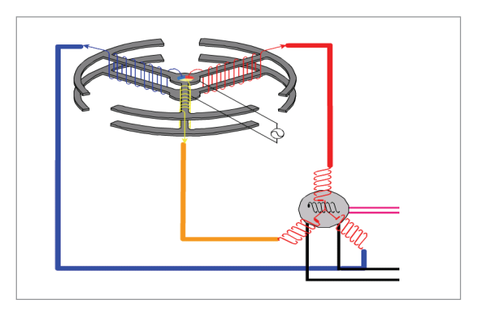
Fig 17.10 — Three-leg flux valve outputs connected to stator: field recreated around the drive shaft. Source p.218
9. Error Signal Comparison — Rotor-Stator
What this section covers: How the error signal is generated, amplified, phase-detected, and rectified to drive the precession motor in the correct direction.
A wound coil (the rotor) is mounted on the gyro drive shaft. If the coil is in line with the AC field generated by the stators, a secondary AC voltage is induced (maximum voltage). If the rotor is at 90° to the AC field (null position), no secondary voltage is induced. At any other position, some voltage is induced.
This secondary voltage = the error signal. It is passed to the precession amplifier where it is:
Step
Process
Reason
1
Amplified
Un-amplified error signal is not powerful enough to drive the precession motor.
2
Phase Detected
Determines the sense (direction) of the error — so the motor turns the shortest way (e.g., 2° anticlockwise, not 358° clockwise), preventing continuous rotation.
3
Rectified to DC
The precession motor is an electromagnetic solenoid acting on a permanent magnet, which requires DC. The DC direction (+ or −) drives the shaft clockwise or anticlockwise.
What this section covers: The compass card display; heading bug; warning flag.
The heading indicator dial (compass card) is directly driven by the shaft from the gyro. The compass card rotates as heading changes and the heading is read against the index line in the 12 o'clock position (the lubber line).
A heading bug (heading select marker) can be set by the pilot to indicate a desired heading. If the magnetic input from the flux valve fails, a heading warning flag appears.
11. Operation as a DGI — FREE Mode vs. SLAVED Mode
What this section covers: FREE vs. SLAVED modes; when FREE mode is used; how the pilot synchronizes in FREE mode.
Mode
Description
When Used
SLAVED
Normal operation: gyro slaved (long-term) to flux valve input. Error correction at ≈3°/min.
Normal operations where flux valve is reliable
FREE
Flux valve input disconnected. Rotor/stator comparison ceases. Gyro operates as a free gyro (DGI). No magnetic monitoring.
Flux valve fails, or near magnetic poles where flux valve is unreliable
In FREE mode: The compass acts as a DGI — it will drift and must be re-set periodically to a directional reference (standby compass or other source). The pilot adjusts the indicated heading using the CCW/CW (counter-clockwise/clockwise) control switch, which is spring-loaded to the central position.
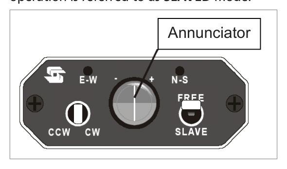
Fig 17.12 — Compass control panel: FREE/SLAVE switch, CCW/CW sync switch, and annunciator. Source p.220
12. Annunciator
What this section covers: What the annunciator is; its two purposes for the pilot.
The annunciator is an indicator positioned in the error signal path between the precession amplifier and the precession motor. During normal flight in SLAVED mode, continuous slight oscillations of heading mean the rotor/stator comparison continuously generates very small error signals. This continuous 'hunting' is normal and by design.
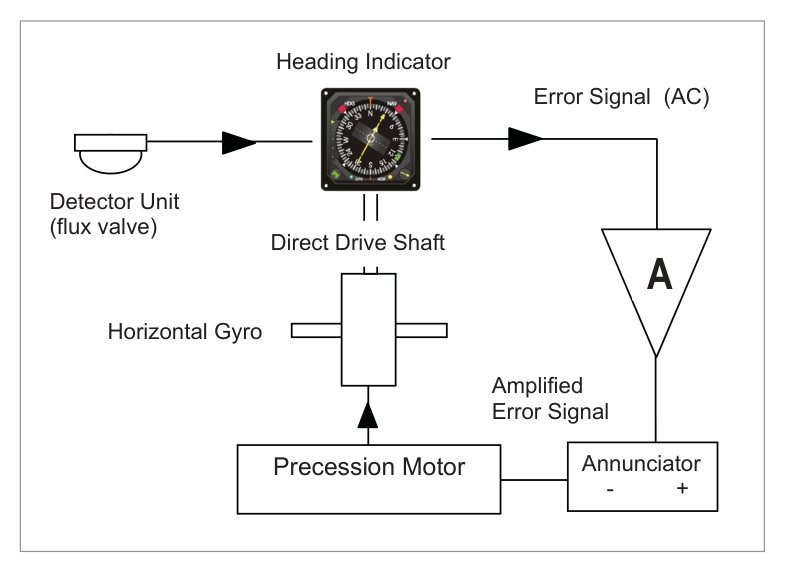
Fig 17.13 — Annunciator in circuit: error signal passes through annunciator on way from amplifier to precession motor. Source p.220
Annunciator Purposes:
1st purpose: Confirms that magnetic monitoring of the gyro is taking place — the compass is 'synchronized' and working normally.
2nd purpose: On systems where the pilot must synchronize manually, it indicates which way to turn the compass for synchronization.
13. Keeping the Gyro Axis Horizontal
What this section covers: How topple (not drift) is prevented; two methods; importance of slow precession rate.
Gyro wander takes two forms: drift (azimuth wander — handled by the slaving system) and topple (vertical wander — must be corrected separately).
The gyro must be tied either to the aircraft yaw axis or to gravity to stay horizontal. Both methods use a levelling switch and a torque motor:
Yaw axis method: Inner and outer gimbals maintained at 90° to each other by a system of commutators, insulating strips, and brushes.
Gravity method: Mercury gravity switches used.
Either way, correcting signals are passed to a torque motor which applies rotational force to the gyro in the yaw axis. The resulting precession returns the gyro to the horizontal — but at a slow precession rate so it does not react wildly to temporary departures (turns, accelerations, climbs, descents).
14. Transmitting Heading Output — Selsyn Unit
What this section covers: How heading information is transmitted to other instruments using a Selsyn (synchro) unit.
Heading information is picked off from the drive shaft between the gyro and the compass card and transmitted to other instruments using a Selsyn Unit (synchro transmitter-receiver pair).
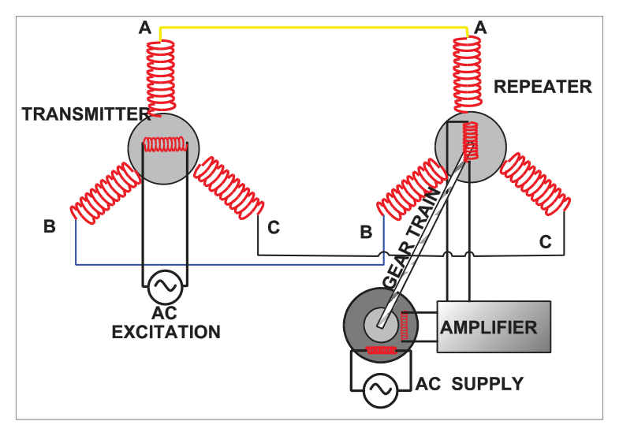
Fig 17.14 — Selsyn unit: transmitter rotor on heading drive shaft; stators connected by 3-strand wire to repeater stators. Source p.221
How it works:
The transmitter rotor is attached to the heading drive shaft and rotates with it. It is supplied with a constant primary AC voltage, which induces a field in the stators.
The stators are directly connected by 3-strand wire to the 3 stator arms of the repeater, reproducing an identical field there.
If the repeater rotor is not perpendicular to the repeater stator field, an AC voltage is induced in the repeater rotor, passed to an amplifier and then a motor to turn the repeater shaft until no further voltage is detected.
The repeater shaft therefore follows any heading changes in the main gyro drive shaft — driving displays in other instruments (RMI, EHSI, autopilot, FMS, etc.).
15. Summary
What this section covers: How the gyro-magnetic compass overcomes the weaknesses of both the DRMC and DGI.
Weakness
DRMC
DGI
Gyro-Magnetic Compass
Turning & acceleration errors
Yes (major problem)
Eliminated
Eliminated (gyro stability)
Magnetic element close to deviation sources
Yes (in cockpit)
No element at all
Detector in wing/tail — away from sources
Can feed other equipment
No
Yes
Yes (Selsyn output)
Long-term heading accuracy
Good (north-seeking)
Poor (drift)
Good (slaved to flux valve)
The gyro-magnetic compass combines:
Short-term stability of a gyroscope (overcoming turning/acceleration errors).
Long-term directional stability of the earth's magnetism (correcting gyro drift via the flux valve).
Quick Revision Summary — Chapter 17:
Gyro-magnetic compass = RIMC = slaved gyro compass. All the same thing.
Rapid sync: a few seconds (high gain mode or mechanical clutch).
Flux valve: 3-spoked device; position = wing tip or tail fin; freedom ±25° pitch/roll; fixed in azimuth.
Flux valve principle: Faraday's Law; magnetic saturation of core; earth field creates dips in resultant flux → EMF induced in secondary winding.
EMF varies as cosine of flux valve leg orientation relative to earth field.
Error signal: amplified → phase detected → rectified to DC → precession motor.
Phase detection: ensures motor turns the SHORT WAY to correct the error.
SLAVED mode: gyro slaved to flux valve. FREE mode: acts as DGI — must be re-set manually.
Annunciator: indicates synchronization in progress; shows which way to correct in manual sync.
Gyro topple correction: slow torque motor (yaw axis). Drift correction: slaving to flux valve.
Heading output to other instruments: Selsyn unit (3-strand wire transmitter-repeater).
Heading indicator: lubber line at 12 o'clock; heading bug; warning flag on flux valve failure.
Practice Questions & Detailed Answers
Source questions reproduced verbatim from Chapter 17. Answer key from source: 1-b, 2-c, 3-a, 4-a, 5-b, 6-a (combination 2, 3 and 5). Note: Q6 source answer confirmed as (a) = statements 2, 3, and 5.
Q1.A gyro-magnetic compass or magnetic heading reference unit is an assembly which always consists of:
1 - a directional gyro 2 - a vertical axis gyro 3 - an earth's magnetic field detector 4 - an azimuth control 5 - a synchronizing control
The combination of correct statements is:
2 and 5
1, 3 and 5
2, 3 and 5
1 and 4
Correct Answer: (b) 1, 3, and 5
Explanation: The gyro-magnetic compass always requires: (1) a directional gyro (horizontal gyro) — provides short-term stability; (3) an earth's magnetic field detector (flux valve) — provides long-term magnetic reference; (5) a synchronizing control (rapid synchronization facility). Statement 2 (vertical axis gyro) is wrong — the gyro in the RIMC is a horizontal gyro (like a DGI), not a vertical axis gyro. Statement 4 (azimuth control) is not a standard separate component — the precession motor performs azimuth correction, but it is not called an "azimuth control" as a named element. See Section 3.
Why the other options are wrong:
(a) 2 and 5 — Statement 2 (vertical axis gyro) is wrong; the RIMC uses a horizontal gyro.
(c) 2, 3 and 5 — Again, statement 2 is wrong.
(d) 1 and 4 — Incomplete; the flux valve (statement 3) is essential. Statement 4 ("azimuth control") is not a standard component name.
Instructor's Note: The gyro in the RIMC is a horizontal gyro (horizontal spin axis — like a DGI). The AH uses a vertical gyro. Common trap: confusing "directional gyro" (horizontal axis) with "vertical gyro" (vertical axis).
Q2.A slaved directional gyro derives its directional signal from:
a direct reading magnetic compass
the flight director
the flux valve
the air data computer
Correct Answer: (c) the flux valve
Explanation: The slaved directional gyro in the RIMC/gyro-magnetic compass derives its long-term directional reference from the flux valve (magnetic detector unit). The flux valve senses the earth's magnetic field and generates an error signal if the gyro drifts from alignment. See Section 4.
Why the other options are wrong:
(a) — The DRMC is a separate backup instrument. The slaved gyro uses the flux valve, not the DRMC, as its magnetic input.
(b) — The flight director uses heading information from the compass, not the other way round.
(d) — The air data computer provides airspeed and altitude data, not directional reference.
Instructor's Note: The flux valve is the magnetic "brain" of the system. The DRMC is a separate backup and is not the input to the RIMC's slaving system.
Q3.The gyro-magnetic compass torque motor:
causes the directional gyro unit to precess
causes the heading indicator to precess
feeds the error detector system
is fed by the flux valve
Correct Answer: (a) causes the directional gyro unit to precess
Explanation: The precession motor (torque motor) receives the amplified, phase-detected, DC error signal and uses it to turn (precess) the horizontal gyro. The gyro's rotation is then transmitted via the direct drive shaft to the heading indicator, changing the compass card reading. See Section 4.
Why the other options are wrong:
(b) — The heading indicator follows the gyro via the drive shaft; the motor does not act directly on the HI.
(c) — The error detector system (rotor-stator comparison) generates the signal that feeds the motor, not the other way round.
(d) — The motor is fed by the DC output of the precession amplifier, not directly by the flux valve. The flux valve feeds the amplifier (via the error detection process).
Instructor's Note: Signal flow: Flux valve → Error detector → Amplifier → Precession motor → Gyro → Drive shaft → Heading indicator. The motor acts on the gyro.
Q4.The heading information originating from the gyro-magnetic compass flux valve is sent to the:
error detector
erector system
heading indicator
amplifier
Correct Answer: (a) error detector
Explanation: The flux valve senses the earth's magnetic field and recreates it (via the 3-leg stator) around the direct drive shaft in the compass unit. This recreated field is compared with the position of the gyro drive shaft rotor (error detector / rotor-stator comparison). The comparison generates the error signal. See Section 9.
Why the other options are wrong:
(b) — "Erector system" usually refers to the AH vertical erection system, not the RIMC.
(c) — The flux valve signal is not sent directly to the heading indicator. It goes to the error detector first; the heading indicator is driven by the gyro drive shaft.
(d) — The amplifier receives the error signal from the detector, not directly from the flux valve.
Instructor's Note: Flux valve → Error detector (rotor-stator) → Amplifier → Motor → Gyro → HI. Each step in order. The flux valve's first contact point is the error detector.
Q5.The input signal of the amplifier of the gyro-magnetic compass resetting device originates from the:
directional gyro erection device
error detector
flux valve
directional gyro unit
Correct Answer: (b) error detector
Explanation: The precession amplifier's input is the AC error signal generated by the rotor-stator comparison (error detector). The amplifier then amplifies, phase-detects, and rectifies this signal before passing it to the precession motor. See Section 9.
Why the other options are wrong:
(a) — The "erection device" refers to the levelling system of the gyro (keeping it horizontal), not the azimuth correction path.
(c) — The flux valve generates the magnetic field signal, but this goes to the error detector first, not directly to the amplifier.
(d) — The directional gyro unit's output (drive shaft position) is one input to the error detector, but the amplifier's input is the error signal from the comparator, not the gyro directly.
Instructor's Note: The amplifier is in the middle of the chain: Error detector → Amplifier → Motor. Its INPUT is always the error signal from the detector. Its OUTPUT drives the motor.
Q6.A flux valve senses the changes in orientation of the horizontal component of the earth's magnetic field:
1 - the flux valve is made of a pair of soft iron bars
2 - the primary coils are fed AC voltage
3 - the information can be used by a "flux gate" compass or a directional gyro
4 - the flux gate valve casing is dependent on the aircraft three inertial axis
5 - the accuracy of the value of the magnetic field indication is less than 0.5%
The combination of correct statements is:
2, 3 and 5
1, 3, 4 and 5
3 and 5
1, 4 and 5
Correct Answer: (a) 2, 3 and 5
Explanation:
Statement 2 — CORRECT: The primary coils of the flux valve are fed AC voltage, which creates anti-phase fields in the flux valve legs. See Section 8.
Statement 3 — CORRECT: The flux valve (flux gate) output can be used by a gyro-magnetic (flux gate) compass or as an input to a DGI slaving system.
Statement 5 — CORRECT: The flux valve provides high accuracy magnetic field indication (less than 0.5% error).
Statement 1 — INCORRECT: The flux valve is a 3-spoked device, not a pair of soft iron bars. The legs are made of a material that saturates magnetically at a defined level.
Statement 4 — INCORRECT: The flux valve casing is fixed in azimuth; it is mounted on a Hooke's Joint giving freedom only in pitch and roll (±25°), not all three inertial axes.
Why the other options are wrong:
(b) — Includes statements 1 and 4, both of which are incorrect.
(c) — Omits statement 2, which is correct (AC feeds primary coils).
(d) — Includes statements 1 and 4 (both wrong); omits 2 and 3 (both correct).
Instructor's Note: Key flux valve facts to check: 3 spokes (not 2 bars); primary = AC; fixed in azimuth (not free in all 3 axes); freedom of ±25° in pitch and roll only; Faraday's Law; 3-phase output.